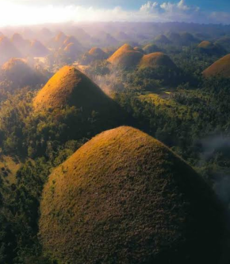
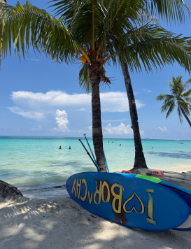
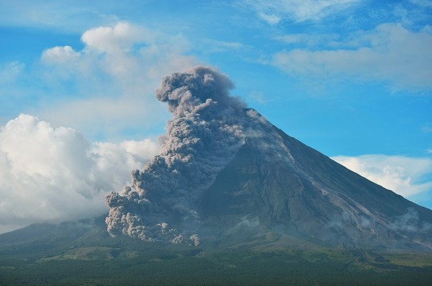
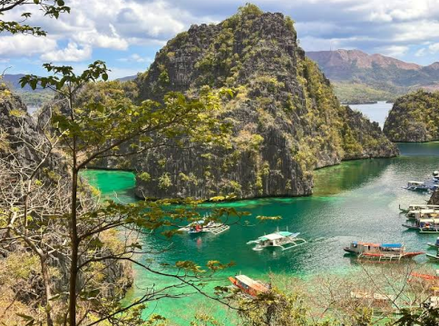
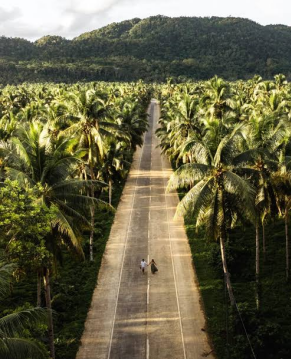

Discover five breathtaking destinations in the Philippines.
The Philippines is home to some of the most beautiful natural wonders in Southeast Asia. From world-famous beaches and mountains to breathtaking islands, these destinations are perfect places to explore.
One of the most famous natural attractions in the Philippines.

The Chocolate Hills are a group of more than a thousand cone-shaped hills located in Bohol. During the dry season, the grass covering the hills turns brown, giving them their famous chocolate-like appearance.
Famous for its beautiful white sand beach and clear blue waters.

Boracay is one of the most popular tourist destinations in the Philippines. Its famous White Beach features soft white sand and crystal-clear turquoise water. Visitors can enjoy swimming, island hopping and beautiful sunsets.
Known for its almost perfect cone shape.

Mayon Volcano is located in Albay and is one of the most recognizable volcanoes in the Philippines. Its symmetrical cone shape and beautiful surroundings make it a popular destination for sightseeing and photography.
Home to breathtaking islands, lagoons and crystal-clear waters.

Palawan is famous for its spectacular limestone cliffs, clear blue waters and beautiful islands. It is a favorite destination for travelers who enjoy island hopping, snorkeling, swimming and exploring nature.
The surfing capital of the Philippines.

Siargao is famous for Cloud 9 and its world-class surfing waves. The island also offers beautiful lagoons, beaches, rock pools, island hopping and a relaxing tropical atmosphere.
Facebook: Kyle Villareal
Contact Email: kyle.christian.villareal@adamson.edu.ph